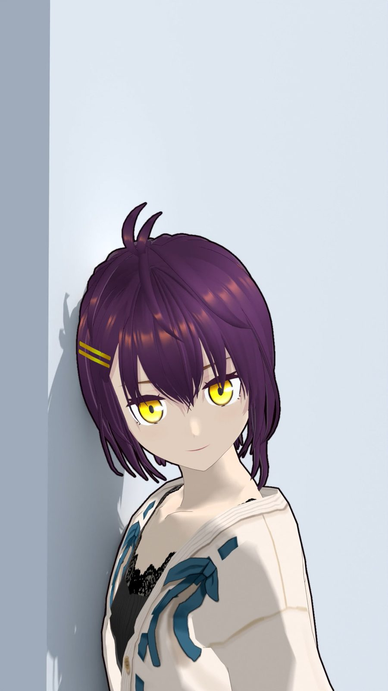
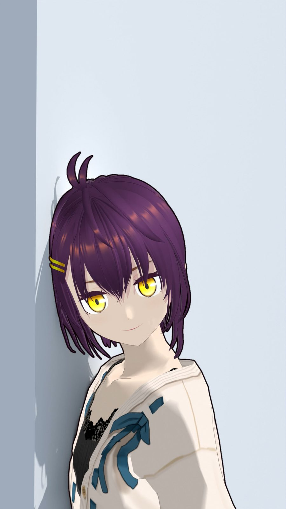
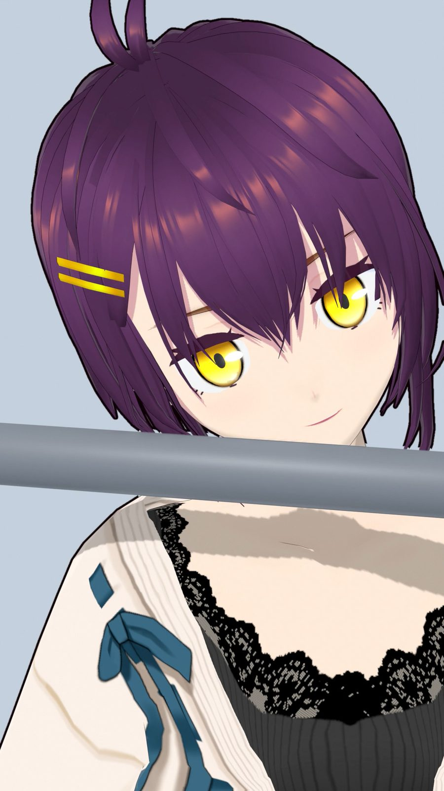
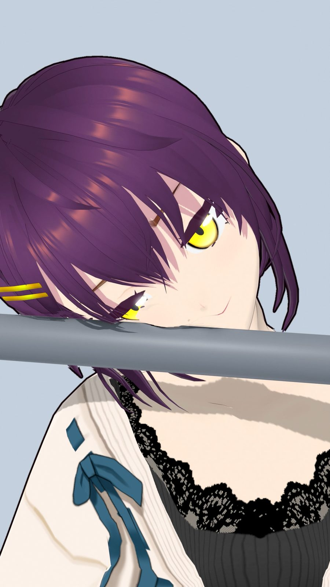

バーチャル観光VFXの進捗報告です。これまでは「立って手を振る」「歩く」といった動きが中心でしたが、今回は物に触れたときの表現に取り組みました。壁に寄りかかったり、鉄棒に頬を乗せたりしたときに、頬や髪がむにっと変形する「接触」の表現です。それぞれ「通常時 → もたれかかっているとき」の順で並べています。
なぜ「変形」が大事なのか
実写に3Dキャラクターを合成すると、触れているはずの物とキャラクターの間で何も起きないと、どうしても「貼り付けた絵」に見えてしまいます。頬が潰れる、髪が押されて形が変わる、といった変形が入ると、体重が乗っている感じや、物が硬い感じが伝わって、「本当にそこにいる」ように見えます。動きの派手さよりも、こうした接触の表現が説得力を決める部分だと考えています。
壁：立っているだけ → 寄りかかる
まずは壁です。通常時は壁のそばに立っているだけですが、寄りかかると頭と頬が壁に沿って、壁側に影も落ちます。体重を預けている感じがかなり違って見えるはずです。

→

鉄棒：顔を近づける → 頬を乗せる
次に鉄棒です。頬を乗せると、重みで頬がむにっと潰れます。潰れすぎても変だし、潰れなさすぎても乗せた意味がないので、まずイラストで「これくらい潰す」という例を作って方向を決めてから、形を作り込みました。

→

| 取り組み | 頬・髪の接触変形（物に触れたときに形が変わる表現） |
|---|---|
| 対象 | 壁に寄りかかる、鉄棒に頬を乗せる |
| 状態 | 鉄棒にもたれる頬の動画が完成。壁に寄りかかるカットも形になってきました |
次のステップ
今回は分かりやすい背景での確認が中心でした。実際の観光地の実写素材の中でも、柵やベンチといった物に触れる場面で同じ表現ができるようにしていくのが次のステップです。